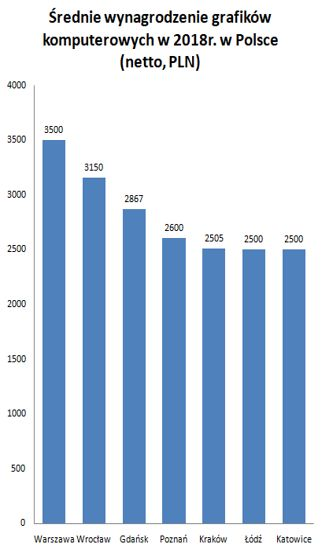

GRAFIK KOMPUTEROWY
Graficy komputerowi zajmują się tworzeniem stron internetowych, reklam, etykiet produktów oraz broszur, za pomocą oprogramowania komputerowego lub ręcznie.
Wysokość pensji grafika komputerowego w zależności od województwa i miasta waha się pomiędzy 2 000 a 4 000 zł netto.

Grafików komputerowych dzielimy na kilka typów:
• Ilustrator – wykonuje rysunki.
• Grafik 3D – zajmuje się tworzeniem modeli, które w późniejszym czasie mogą zostać wykorzystane przy tworzeniu animacji, gier komputerowych, symulacji czy jako wirtualne makiety domów.
• Specjalista od tworzenia grafiki 3D – tworzy wypełnienia dla modeli stworzonych przez grafika 3D.
• Projektant stron internetowych (Web Designer) – opracowuje szatę graficzną stron internetowych.
• Projektant interfaceów – zajmuje się opracowaniem szat graficznych, które następnie zostają przeprogramowane w funkcjonalna całość.
• Specjalista od budowania marki – tworzy i modyfikuje elementy graficzne, które mają być wykorzystywane w ramach jednej firmy.
• Retuszer – poprawia wygląd zdjęcia, jego ogólną jakość, odnawia stare fotografie. Może także stylizować nowe zdjęcia na wykonane w innej epoce.
• Operator DTP – odpowiednio składa tekst i obraz, tak, aby nadawał się on do wykorzystania w ostatecznej publikacji.
*Opracowanie własne na podstawie
danych ze strony pracuj.pl
TECHNOLOGIA VR
Grafik komputerowy może także zajmować się tworzeniem obrazów w technologii VR, która staje się coraz bardziej popularna. Już teraz produkowane są gry w tej technologii. Istnieje duże prawdopodobieństwo, iż przyszli gracze będą wykorzystywali ją jako formę spędzania czasu wolnego. Technologia VR jest innowacyjna, ponieważ dzięki niej można poczuć się, jakby naprawdę uczestniczyło się w wydarzeniach z gry.